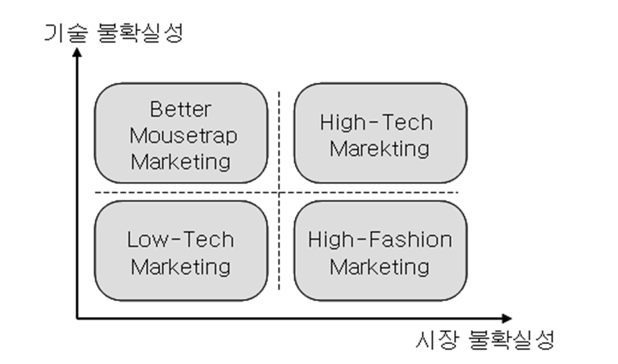

Conjoint 분석 방법
Pre-class video
- Conjoint Analysis (2) for IMUX
하이테크 시장의 특징
1. 하이테크 상품의 정의
하이테크 상품의 정의에 대한 합의 부족
전문가들 사이에서 명확한 기준이 없음
일반적으로 첨단기술을 활용한 제품으로 정의됨
그러나 대부분의 신상품이 새로운 기술을 포함하므로 범위가 과도하게 넓어질 수 있음
미국 노동통계청(BLS)의 정의
- 평균 연구개발비 지출이 미국 전체 기업 평균의 두 배 이상
- 평균 기술직 고용 인력이 두 배 이상인 기업을 하이테크 기업으로 분류- Regis McKenna의 정의
- 제품의 복잡성, 급격한 변화, 혼동스러운 소비자, 다수의 기업가적 경쟁자가 있는 기업- 산업별 정의
- IT, BT, NT, CT, ST 등 5가지 첨단산업과 관련된 상품- 김상훈(2004)의 정의
- "급격한 기술변화와 상당한 시장 불확실성에 노출된 상품"- 하이테크 상품의 특징
- 시장이 성숙하여 수요가 안정된 경우 하이테크 상품으로 보기 어려움
- 기술적 혁신성이 크고 시장의 불확실성이 높다면 하이테크 상품에 해당- 하이테크 마케팅의 중요성
- 높은 시장 불확실성으로 인해 마케팅이 핵심 요소
- 주요 이슈:
- 신상품을 소비자의 요구에 맞게 설계하는 방법
- 소비자가 제품을 구매하도록 유도하는 방법
- 시장을 성공적으로 창출하고 확산하는 방법2. 하이테크 마케팅
- 하이테크 산업의 특징
- 시장 불확실성이 높은 산업군:
- 통신
- 컴퓨터 하드웨어/소프트웨어
- 디지털 가전
- 인터넷 콘텐츠 및 e-비즈니스
- 바이오 산업 등- 하이테크 마케팅의 개념
- 하이테크 상품을 대상으로 하는 마케팅
- 전통적 마케팅과 다른 방식의 접근 필요가. 시장 불확실성 및 기술 불확실성
- 시장 불확실성 (Moriarty & Kosnik, 1989)
- **소비자 욕구 파악의 어려움**
- 새로운 시장에서 소비자 선호 구조를 예측하기 어려움
- **소비자 니즈 변화**
- 예: 휴대전화의 초기에는 통화 품질이 중요했으나, 이후 휴대성과 기능성이 중요한 요소로 변화
- **산업 표준의 부재**
- 제품 출시 시 관련 산업 표준이 미정일 가능성이 큼
- 예: 특정 메모리 형식(SD vs. T-Flash)의 표준화가 산업 경쟁력을 결정
- **혁신 확산의 속도 예측 불가능**
- 신제품이 얼마나 빠르게 시장을 창출할지 예측하기 어려움
- **잠재 시장 규모의 예측 난항**
- 신제품의 경우 비슷한 기존 제품이 없어 시장 규모 예측이 어려움
- 예: DMB 기능이 있는 휴대전화가 이동통신 시장과 방송 시장 중 어디에 속하는지 모호- 기술 불확실성 (Moriarty & Kosnik, 1989)
- **제품 성능 불확실성**
- 제품이 소비자 기대 수준에 부합하는지 확인이 필요
- **제품 부작용 가능성**
- 예: 온라인 결제 시스템의 보안 문제, 의약품의 예상치 못한 부작용
- **중간재와의 호환성 문제**
- 예: 온라인 게임의 고품질 그래픽이 네트워크 성능에 의해 제한될 수 있음
- **제품 개발 및 출시 시기 불확실성**
- 출시 지연 시 경제적 손실 및 신용 타격 가능성
- **기술 진부화 위험**
- 기술 발전이 빠른 산업에서는 기존 기술이 빠르게 대체될 가능성 큼나. 마케팅 유형의 구분
Moriarty & Kosnik (1989)의 분류 기준
- 시장 불확실성과 기술 불확실성의 조합에 따라 네 가지 마케팅 유형으로 구분

다. 마케팅 유형의 구분
1. Low-Tech Marketing
기술 및 시장 불확실성이 모두 낮은 경우
특징
기존 시장의 규모가 크고 소비자 선호 구조가 비교적 명확
사용되는 기술이 보편화되어 개발 및 생산의 기술적 난이도가 낮음
예시
- 생활필수품 및 일반 소비재
마케팅 전략
- 전통적인 마케팅 방식으로 충분
2. High-Fashion Marketing
시장 불확실성이 높지만 기술 불확실성은 낮은 경우
특징
소비자 선호가 빠르게 변화
기존 시장은 존재하지만 변동성이 큼
예시
- 영화, 스포츠, 엔터테인먼트 산업
마케팅 전략
- 소비자 선호의 변화 파악이 핵심
3. Better Mousetrap Marketing
기술 불확실성이 높지만 시장 불확실성은 낮은 경우
특징
소비자 니즈가 비교적 확실
제품 개발에 높은 기술 수준 요구
예시
- 암 치료제, 고성능 의료기기
마케팅 전략
기능의 우수성 강조
부작용에 대한 소비자의 우려 해소
4. High-Tech Marketing
기술 및 시장 불확실성이 모두 높은 경우
특징
기술 개발 및 제품 생산에 높은 수준의 기술력 필요
소비자 선호 및 니즈가 불명확하여 기존 마케팅 전략과 차별화 필요
마케팅 전략
- 기존의 전통적인 마케팅 방식과 다른 접근 필요
라. 하이테크 마케팅의 특징
1. 소비자 선호의 이질성 (Heterogeneity)
하이테크 제품은 소비자별로 인식 및 필요성의 차이가 큼
필수품이 아닌 경우가 많아 소비자마다 제품 가치를 다르게 평가
기술수용모형에서 나타난 혁신자(early adopters)와 대중(consumers) 간의 차이 발생
2. 동적(Dynamic) 마케팅 전략 필요
시장 초기 목표 고객 선정 후, 성장 단계에서 소비자 변화 대응 필수
전략 요소
초기 시장 선점
빠른 제품 출시
적절한 타이밍의 시장 전략 결정
3. 기술 및 마케팅 부서 간 협업 필수
효과적인 하이테크 마케팅을 위해 기술 개발팀과 마케팅팀의 원활한 협력 필요
기술 지식이 없는 마케팅팀은 효과적인 전략 수립이 어려움
4. 시장 동향 및 소비자 니즈 예측의 중요성
능동적이고 미래지향적인 접근 필수
- 현재 소비자 요구만 분석하면 미래 시장 변화 대응이 어려움
잠재적 니즈 발굴의 어려움
- 기존 제품 개선보다는 혁신 제품이 많아 시장 조사 자체가 어려운 경우 발생
5. 하이테크 기업이 직면하는 장애물
조직 내부의 경직성 및 정보 공유 부족
고객의 현재 의견에만 의존하면 혁신적 신제품 개발 지연
시장 조사만으로 소비자의 미래 선호 예측이 어려움
마. 하이테크 마케팅의 핵심
하이테크 제품 마케팅은 기존 소비재 마케팅과 달리 시장 변화 관찰 및 미래 소비자 니즈 예측이 필수
3장에서 잠재적 선호 분석 및 유용한 이론적 접근법을 소개 예정